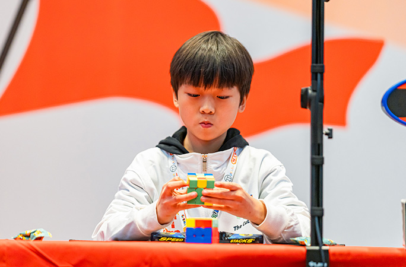
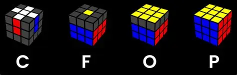

Rubik's cube is a puzzle where you have to put the same colors into one same size
Rubik's cube has roughly 43 quintillion possible combinations
It was created by Erno Rubik in 1974
The best solver in the world currently is yiheng wang
The best average on it is currently 3.51 by yiheng
while the best single on it is 2.51 by xuanyi geng

My personal best right now is 14 seconds, and i can solve a 2x2,3x3,4x4,5x5,7x7 currently
its really interesting how the best solvers in the world all use ZBLL
As a decent solver myself, I use CFOP which means Cross,F2L,OLL,PLL.
In CFOP, you solve the first 2 layers by making a cross as fast you can and then solve the rest quickly as well.
Then you make the yellow pieces reside on the same side by OLL. Lastly you permeate the last pieces with PLL.
There are other things you can solve with such as ROUX, ZB but these are inefficient and harder.

There is also ZBLL
you learn thousands of algorithms to effectively solve the OLL and PLL at the same time.
Although learning that is very hard for beginners and you should only learn it, if you want to compete in speedcubing competitions.
Learning algorithms
when you learn algorithms, it's hard at the start but when you are dedicated to it, even if you dont remember the movements, your hands just automatically do it since you have muscle memory on it.
for example : T perm
I got consistent at it really quickly, since the click pattern is really fun to execute. T perm : R U R' U' R' F R2 U' R' U' R U R' F'. These might make no sense at first but learning it in practice is easy.